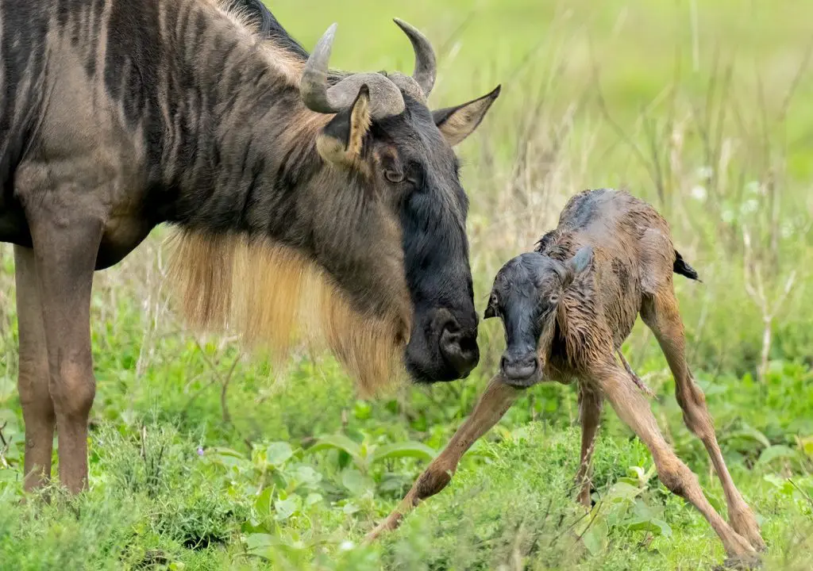
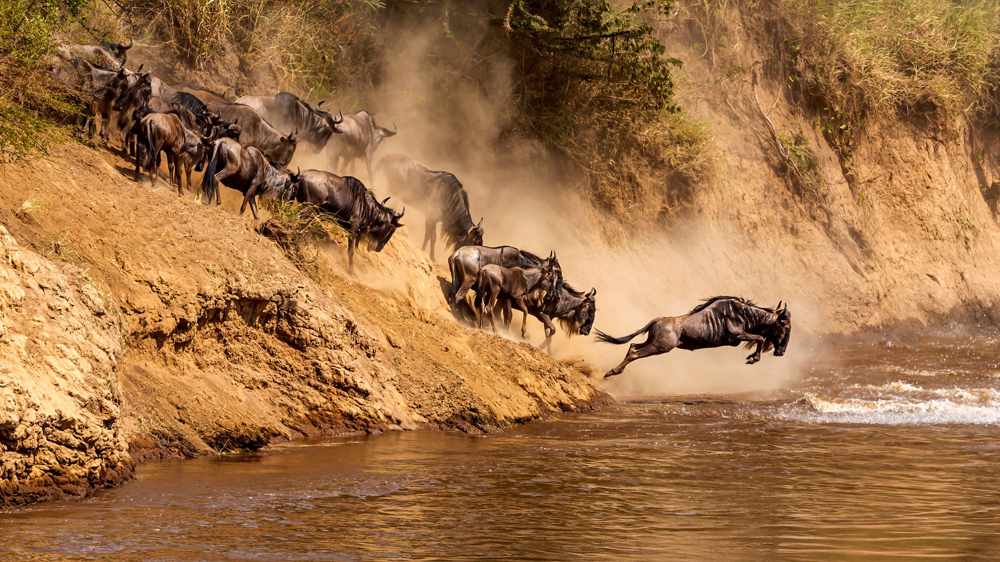
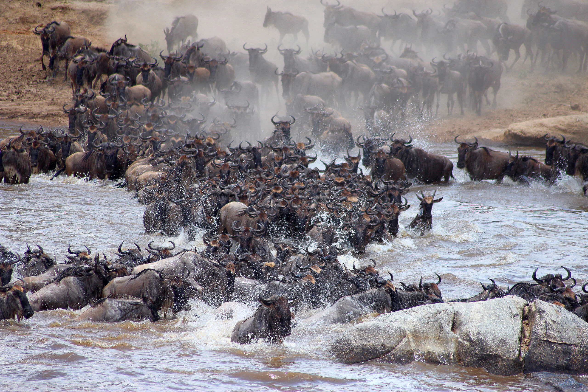

One of the most frequent questions we receive is: "When is the best time to witness the Great Migration in the Serengeti?" The answer isn't a single month, because the Migration is a vast, continuous, year-long journey driven by rainfall and the search for fresh grazing.
Understanding the cyclical nature of this incredible spectacle, involving over 1.5 million wildebeest, hundreds of thousands of zebras, and numerous gazelles, is key to planning your trip. While sightings vary year to year based on rain patterns, here’s a general guide to where the herds are likely to be and what major events occur throughout the year:
Understanding the Migration Cycle
The Great Migration isn't a single event but a perpetual movement across the Serengeti-Mara ecosystem. The animals follow the rains, seeking fresh, nutritious grass. This massive movement attracts numerous predators – lions, cheetahs, hyenas, and wild dogs – making for dramatic wildlife viewing opportunities throughout the cycle.
Month-by-Month Migration Guide (Approximate)
December - March: Calving Season (Southern Serengeti / Ndutu)
Following the short rains (Nov/Dec), the herds congregate on the nutrient-rich short grass plains of the Southern Serengeti and the Ngorongoro Conservation Area (specifically the Ndutu region). This is the **calving season**, typically peaking in February. Hundreds of thousands of wildebeest calves are born within a few weeks, creating a nursery of incredible scale.
This concentration of vulnerable newborns attracts predators, making it a prime time for witnessing intense predator-prey interactions (lions, cheetahs, hyenas).
- Location: Southern Serengeti Plains, Ndutu Area (Ngorongoro Conservation Area).
- Highlights: Calving, large concentrated herds, excellent predator sightings.
- Considerations: Can be busy, especially around Ndutu. Requires travel into NCAA.
April - May: Northward Trek & Long Rains (Central/Western Serengeti)
As the southern plains dry out and the long rains begin, the herds start their arduous journey northwest. They move up through the Moru Kopjes and Seronera areas of the Central Serengeti, often splitting into large columns. Some head towards the Western Corridor.
- Location: Moving from South/Ndutu towards Central (Seronera) and Western Corridor (Grumeti).
- Highlights: Massive columns of animals on the move, lush green scenery, fewer crowds.
- Considerations: This is the main rainy season ("Green Season"). Expect rain showers, potentially muddy tracks. Some camps may close. Excellent value possible.
June - July: Grumeti River Crossings & Consolidation (Western/Central Serengeti)
The herds consolidate in the Western Corridor, facing the challenge of the Grumeti River. While not as consistently dramatic as the Mara crossings, witnessing herds navigating the crocodile-infested Grumeti is still a spectacle. As the rains subside, herds continue pushing north through the Seronera region as well.
- Location: Western Corridor (Grumeti River area), Central Serengeti (Seronera).
- Highlights: Potential Grumeti River crossings, large herds moving north.
- Considerations: Start of the peak dry season.
July - October: Mara River Crossings (Northern Serengeti)
This is arguably the most famous phase. The herds reach the Northern Serengeti (Kogatende, Lamai areas) and face their biggest obstacle: the Mara River. Throughout these months, vast numbers attempt the perilous crossings into Kenya's Maasai Mara National Reserve, braving strong currents and enormous crocodiles. This is peak season for witnessing this raw, dramatic event.
The crossings are unpredictable; herds might cross multiple times back and forth, or wait for days. Patience is often required, but the reward is unforgettable.
- Location: Northern Serengeti (Kogatende, Lamai Wedge, Mara River).
- Highlights: Dramatic Mara River crossings, huge concentrations of wildebeest and zebra.
- Considerations: Peak season = highest prices and most visitors. Accommodation books up far in advance. Crossings are not guaranteed on any given day.
November - December: Southward Return & Short Rains
As the short rains begin (usually in November), the herds start migrating south again from the Maasai Mara and Northern Serengeti, moving down through the Lobo area and eastern/central plains, heading back towards the revitalized grazing grounds of the Southern Serengeti/Ndutu for the next calving season.
- Location: Moving south from Northern Serengeti through Lobo, Central Serengeti, towards the Southern Plains.
- Highlights: Herds on the move again, potential for dramatic skies with the short rains, fewer crowds than peak season.
- Considerations: Short rains can make some tracks slippery. Herd location can be less predictable.
So, When is the "Best" Time?
It truly depends on what you want to experience:
- For Calving & Predator Action: December to March (Ndutu/Southern Serengeti).
- For Dramatic River Crossings: July to October (Northern Serengeti - Mara River), potentially May-June (Western Serengeti - Grumeti River).
- For Huge Herds on Plains: Can be seen in various locations depending on the month (Dec-Mar in South, Apr-Jun moving North, Jul-Oct in North).
- For Fewer Crowds & Better Value (Green Season): April-May (be prepared for rain). November-Early December can also offer value.
Beyond the Migration
Remember, while the Migration is incredible, the Serengeti offers fantastic resident wildlife viewing **year-round**, especially in the Central Seronera region. You'll always have excellent chances to see lions, leopards, cheetahs, elephants, giraffes, hippos, and much more, regardless of where the main migration herds are.
Planning Your Migration Safari
Timing is everything for the Great Migration. Let Golden Memories Safaris help you plan your trip based on the time of year you want to travel and the specific migration events you hope to witness. Our expert guides know the Serengeti intimately and will strive to put you in the best possible locations.
Contact Us to Plan Your Trip